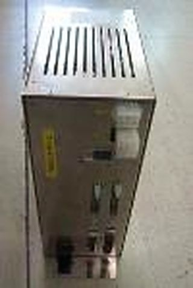
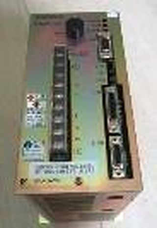

リソグラフィ
露光・塗布現像・計測装置を、ひとつの窓口で。
ASML・Nikon・Canon・TEL・Hitachi などの露光・塗布現像・計測装置を対象に、部品修理・基板修理・リファービッシュ・保守をご提供します（対応可否・範囲は案件ごとに確認）。
リソグラフィ（露光・塗布現像・計測）
露光・塗布現像・計測装置の修理・保守サービス
露光装置・塗布現像装置・計測装置と周辺機器の部品修理・基板修理・リファービッシュ（再生整備）・保守に対応します。ご依頼の窓口は二九TECH に一本化しており、対応範囲は案件ごとに確認いたします。
ASML PAS 5500
ASML TWINSCAN

Nikon NSR
露光装置（ステッパ／スキャナ）
- ASML PAS 5500 シリーズ：制御基板、ウェハハンドラ・ステージ系・照明系（イルミネータ）ユニット、干渉計用レーザヘッドの修理
- ASML PAS 5500 シリーズ：定期保守（PM）・修理・据付／移設・部品供給
- ASML TWINSCAN：エンコーダ基板・アライメント用レーザ・ステージ部品（チャッククランプ・フレックスケーブル）・レチクルライブラリなど、ユニット単位の修理
- Nikon NSR ステッパ（g線 G7／G8 系・i線 i シリーズ）・スキャナ（S シリーズ）：LS リレーアンプ、アライメント用・干渉計用レーザ、CPU 基板・ドライバ基板の修理
- Canon FPA i線ステッパ（FPA-3000i4／i5 など）・MPA（ミラープロジェクションアライナ）：部品修理（干渉計用レーザヘッドを含む）
- Ultratech ステッパ（1000〜1500 シリーズ）：サーボモータ・ステージ部品の供給・修理／Perkin-Elmer Micralign：部品のご相談
- リファービッシュ露光装置の調達：Canon FPA シリーズ（i線／KrF）、Nikon NSR i線ステッパなど（在庫・仕様・据付範囲は案件ごとに確認）
塗布現像装置（コータ／デベロッパ）

ロボットコントローラ・ティーチング通信基板 修理
サーボドライバ・サーボモータ修理（安川電機・パナソニック・三菱電機・FANUC・Siemens・Kollmorgen ほか）写真は、塗布現像装置にも使われる同種ユニット（ロボットコントローラ・サーボドライバ）の例です。
- TEL CLEAN TRACK（MARK シリーズ〜ACT シリーズ）：部品修理・基板修理
- TEL CLEAN TRACK（MARK・ACT・LITHIUS シリーズ）、SCREEN（旧 DNS）RF³ など：150／200／300 mm（6／8／12 インチ）装置のリファービッシュ、リファービッシュ装置の調達
- リファービッシュ装置：改造・アップグレードのご相談
計測装置（測長SEM・オーバーレイ・膜厚）
- 日立ハイテク（Hitachi）測長SEM（S-8000／S-9000 シリーズ、CG4000 など）：部品供給・修理・リファービッシュ
- 重ね合わせ（オーバーレイ）計測装置：KLA-Tencor 5100／5200／5300 の部品修理（制御基板など）・リファービッシュ、KLA-Tencor Archer のレーザスケール修理、Overlay Q200／Q220／Q230／Q240 の部品修理
- 膜厚計測装置（Nanometrics NanoSpec・Atlas・QS シリーズ〔FTIR〕、Nova i500）：部品修理・リファービッシュ・改造・PM・故障診断
- その他の計測装置（Therma-Wave Opti-Probe OP2600・OP3290 DUV、Rudolph FOCUS・S200／S300、KLA-Tencor UV シリーズ・Prometrix）：リファービッシュ・据付／移設・校正・PM
周辺機器・ユニット

- MKS Baratron（静電容量隔膜真空計／キャパシタンスマノメータ、リソグラフィ・CVD・PVD・エッチング装置用）：故障診断・修理・校正（校正成績書の発行・トレーサビリティの条件は案件ごとに確認）・定期保守（PM）
- MKS Baratron 622／623／625〜629／631・722／727／728／740・E27H／E28H／E29H など（加熱型・非加熱型）、MKS 902 シリーズ（ピエゾ式）：修理不能品・生産終了品は後継機種・代替機種（市販品）をご提案（採用はお客様のご承認のうえ）
- 周辺ユニット：Asyst SMIF 用制御基板・ファン、搬送ロボット（Brooks・ローツェ・安川電機・川崎重工）、チラー、高圧電源、ターボ分子ポンプの修理
対応範囲・納期・保証条件は案件ごとに確認し、お見積りにてご提示します。修理品・リファービッシュ品はメーカーの認定品ではありません。交換部品に非純正品を使用する場合は、お見積り時に明示し、お客様のご承認を得たうえで使用します。記載のメーカー名・型式は対象装置を示すためのものであり、各メーカーとの提携やメーカー純正サービスを意味するものではありません。記載の会社名・製品名は各社の商標または登録商標です。